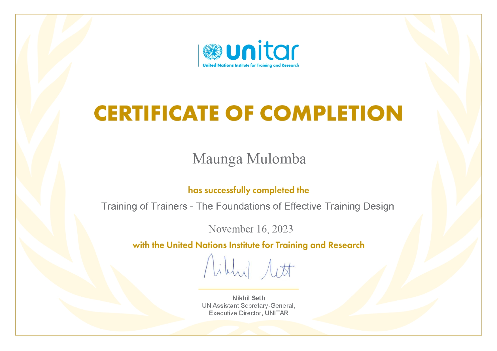
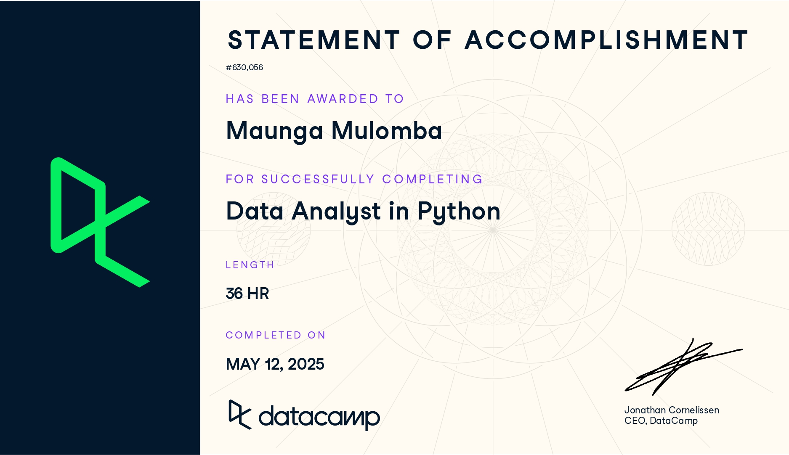
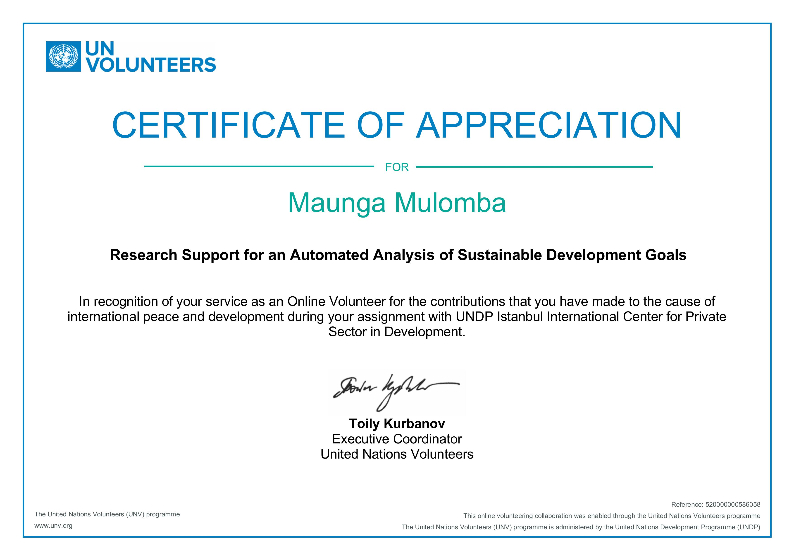

A little
about me
I have always loved working with numbers. I studied actuarial science because I liked making sense of complex things. That instinct has not really changed, it has just shown up in different ways over time.
After university I found my way into global development through volunteer work, which led to an internship at the International Trade Centre. Working with small businesses there sparked an interest that stayed with me, and I eventually moved into independent consultancy, where I spent two years helping business owners communicate what they do to potential clients and partners.
What stuck with me was that people understood their business but struggled to organise that knowledge in a way that made sense to someone on the outside. That gap kept coming up and eventually it pulled me toward learning design. I am now building toward a career at the intersection of learning, data and global development.





